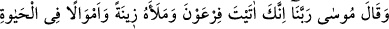
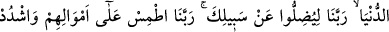
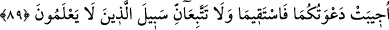

MUSA (A.S.)’IN BEDDUASI
88. Musa dedi ki: “Ey Rabb’imiz, Sen Fir’avn’a ve adamlarına şu dünya
hayatında ziynet ve nice mallar verdin. Ey Rabb’imiz, senin yolundan saptırsınlar
diye mi? Ey Rabb’imiz, onların mallarını yok et, kalplerine sıkıntı ver ki acı azabı
görünceye kadar inanmasınlar.”
89. Allah: “İkinizin duası kabul olundu. Dosdoğru olun, sakın bilmeyenlerin yoluna
uymayın.” buyurdu.
Musa dedi ki: “Ey Rabb’imiz, Sen Fir’avn’a ve adamlarına şu dünya hayatında
ziynet” olarak kullanılacak giysi, binek ve bunlara benzer şeyler “ve nice mallar”
para, meta gibi envai çeşit mal-mülk “verdin.”
İbn Abbas buyurmuştur ki: Mısır’daki Füstat’tan Habeşistan’a kadar olan dağlarda
altın, gümüş ve zeberced madenleri vardı. Bunların hepsi Fir’avn’un emrindeydi.
Fir’avn’un fermanı bu yerlerde geçerliydi. Bu yüzden Kıptîler’in tasarrufunda çok mal
vardı. Çok zengin ve ziynet sahibi oldular. Bu durum onların yoldan çıkmalarına ve
başkalarını da saptırmalarına sebep oldu.
“Ey Rabbimiz” bu ifade birincinin tekrarıdır. Yani bütün bu ziynet ve mal-mülkü
neticede kullarını “senin” îmân “yolundan saptırsınlar diye mi?”
Sadece mirasçılar için biriktiriyoruz malları
Zaman harabeye çevirsin diye yapıyoruz binaları.
Cümlenin şöyle anlaşılması da mümkündür: “senin yolundan çevirmeleri için mi?”
Bu durumda söz hakikat anlamında değil, mecâzî mânâda kullanılmış olur. Çünkü Allah
Teâlâ, bütün bu malı mülkü onlara inansınlar ve nimetine şükretsinler diye vermesine
rağmen onlar daha fazla azıp inkar etmek için bir vesile olarak görmüşlerdir. Böyle
olunca da onların bu durumu, kendisine saptırması için mal verilen birinin durumuna
benzetilmiştir.
Âyette dünya malının sapmaya ve saptırmaya sebep olduğu belirtilmektedir. Çünkü
insan kendisini müstağnî, ihtiyaçsız gördüğü için azar. Ayrıca başkalarını debdebe ve
konfor içinde görenler, aynı şeylerin kendilerinde de olmasını arzular. Nitekim Karun